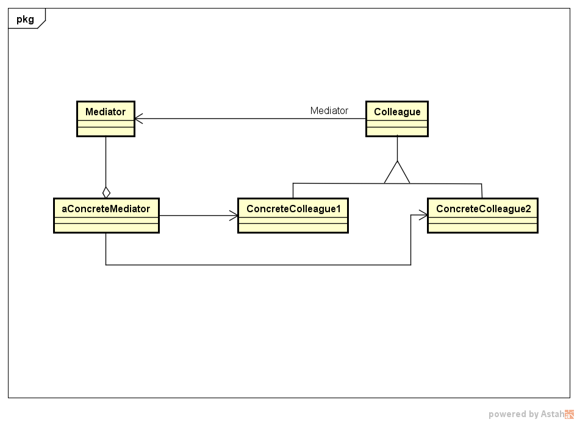

Mediator
Descrição:
A intenção desse padrão é definir um objeto que encapsula a forma como um conjunto de objetos interage. O Mediator promove o acoplamento fraco ao evitar que os objetos se refiram uns aos outros explicitamente e permite variar suas interações independentemente.
Descrição da UML:
- - O UML a seguir ilustra como o Mediator funciona como um intermediário que evita que os objetos do grupo referenciem uns aos outros explicitamente. Os objetos apenas conhecem o mediador, desta forma reduzindo o número de interconexões.
Diagrama de Classes genérico do padrão:
Exemplo:
O exemplo do livro se trata de uma casa inteligente, onde todos os eletrodomésticos são projetados para facilitar a vida do morador. Mas apesar de todas as facilidades já fornecidas pela casa automática os clientes sempre querem novos recursos que exigem uma iteração mais complexa entre os eletrodomésticos. O Mediator é usado para:
- Controlar o sistema;
- Fazer solicitações individuais a cada objeto;
- Deixar os objetos mais independentes e desconectados;
Os objetos precisam informar ao mediator quando o seu estado muda e responder as solicitações do mediator.